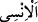

Râğıb der ki: “__WORD__ insanlara (__WORD__) mensub demektir. Bu kelime, ünsiyeti çok olan,
kendisiyle kolay geçinilen herkes için kullanılır. Çoğulu “__WORD__dir.”
Âyetteki “__WORD__ (nice)” lafzı, insanların sıfatıdır. Onlardan maksad, yağmurlara muhtaç
olarak yaşayan bedevilerdir. Bunun için “__WORD__ ve “__WORD__ kelimeleri nekra olarak
zikredilmiştir. Çünkü bu nekrelik, türü ifâde eden fertler içindir. Özellikle bedevilerin
zikredilmesinin sebebi, şehir ve kasabalarda yaşayanlar, nehirlerin ve kaynakların
yakınında ikâmet ettikleri için, yağmur suyuna pek ihtiyaç duymazlar. Diğer vahşî
hayvanlar ve kuşlar da su aramak için uzak yerlere kadar giderler ve bu yüzden yağmur
suyunu içme ihtiyacı hissetmezler.
Âyette “hayvanlar” da özel olarak zikredilmiştir. Çünkü insan hayvanı ticâret
amacından çok kendisi için edinir. İnsanların genellikle faydaları ve geçimleri onlara
bağlıdır. Bu yüzden nasıl ki ölü toprağa can vermek, hayvanlara su vermekten önce
zikredilmişse, hayvanlara su verilmesi de insanlara su verilmesinden önce
zikredilmiştir. Çünkü ölü toprağa can verilmesi, hayvanların hayâtına ve yaşayışına
sebeptir. İnsanın rızkının nasıl tertip edilip sıralandığına bir bak! Çünkü hayvanlar
insanın rızkıdır, otlar hayvanların rızkıdır, yağmur da otların rızkıdır. Dolayısıyla önce
yağmur zikredildi, peşinden yeryüzünün otlarla canlanması, sonra da hayvanlar
sıralandı.
[223]. Bir midir yârini der-sîne eden âşıkla
Dîde-i hasreti yollarda kalan bîçâre
[224]. Buhârî, Teheccüd, 12; Müslim, Müsafirin, 207; Ebû Dâvûd, Tatavvu 18; İbn
Mâce, İkame, 174; Muvatta, Sefer, 95; Müsned, II, 243, 253
[225]. Buhârî, Teheccüd, 13; Müslim, Müsâfirîn, 205.
[226]. Heysemî, Mecma‘u’z-zevâid, X, 135 (17126)
[227]. Bk. Müsned, II, 222
[228]. Bk. Ebû Dâvûd, Tahâret, 48; İbn Mâce, Tahâret 41; Müsned, II, 418
[229]. Kenzü’l-ummâl, XVI, 128